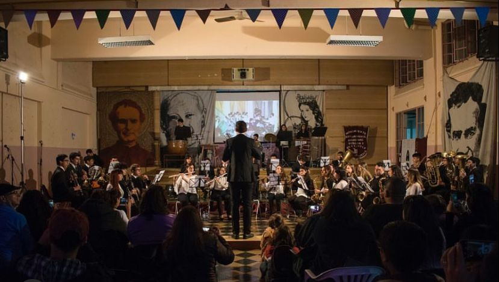

Nosotros somos una banda de musica que esta compuesta por Exploradores Argentinos de Don Bosco. Nuestro
Batallón es el Batallón 3, dentro de ese grupo se encuetra la Banda de Música del Batallón 3. A la Banda la integran 40
exploradores y exploradoras, la edad ideal para que puedan ingresar a nuestra Banda es a partir de los 11 años y el
maximo de edad para entrar es 14 años. Los instrumentos que podemos encontrar en nuestra sala de música son:
saxos, baritonos, trompetas, clarinetes, trombones, flautas , cornos y todo tipo de percusión.